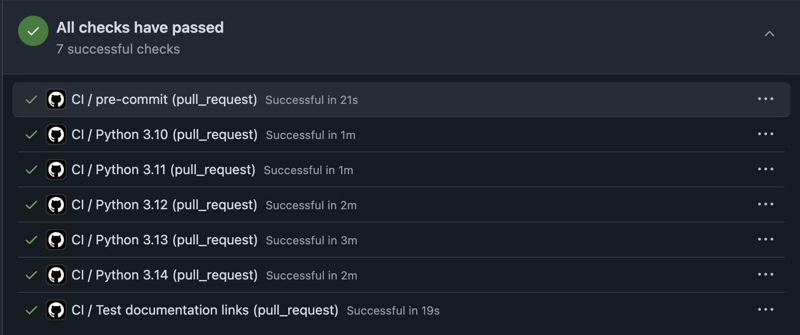

Contributing to REST framework¶
The world can only really be changed one piece at a time. The art is picking that piece.
There are many ways you can contribute to Django REST framework. We'd like it to be a community-led project, so please get involved and help shape the future of the project.
Note
At this point in its lifespan we consider Django REST framework to be feature-complete. We focus on pull requests that track the continued development of Django versions, and generally do not accept new features or code formatting changes.
Community¶
The most important thing you can do to help push the REST framework project forward is to be actively involved wherever possible. Code contributions are often overvalued as being the primary way to get involved in a project, we don't believe that needs to be the case.
If you use REST framework, we'd love you to be vocal about your experiences with it - you might consider writing a blog post about using REST framework, or publishing a tutorial about building a project with a particular JavaScript framework. Experiences from beginners can be particularly helpful because you'll be in the best position to assess which bits of REST framework are more difficult to understand and work with.
Other really great ways you can help move the community forward include helping to answer questions on the discussion group, or setting up an email alert on StackOverflow so that you get notified of any new questions with the django-rest-framework tag.
When answering questions make sure to help future contributors find their way around by hyperlinking wherever possible to related threads and tickets, and include backlinks from those items if relevant.
Code of conduct¶
Please keep the tone polite & professional. For some users a discussion on the REST framework mailing list or ticket tracker may be their first engagement with the open source community. First impressions count, so let's try to make everyone feel welcome.
Be mindful in the language you choose. As an example, in an environment that is heavily male-dominated, posts that start 'Hey guys,' can come across as unintentionally exclusive. It's just as easy, and more inclusive to use gender neutral language in those situations.
The Django code of conduct gives a fuller set of guidelines for participating in community forums.
Issues¶
Our contribution process is that the GitHub discussions page should generally be your starting point. Some tips on good potential issue reporting:
- Django REST framework is considered feature-complete. Please do not file requests to change behavior, unless it is required for security reasons or to maintain compatibility with upcoming Django or Python versions.
- Search the GitHub project page for related items, and make sure you're running the latest version of REST framework before reporting an issue.
- Feature requests will typically be closed with a recommendation that they be implemented outside the core REST framework library (e.g. as third-party libraries). This approach allows us to keep down the maintenance overhead of REST framework, so that the focus can be on continued stability and great documentation.
Triaging issues¶
Getting involved in triaging incoming issues is a good way to start contributing. Every single ticket that comes into the ticket tracker needs to be reviewed in order to determine what the next steps should be. Anyone can help out with this, you just need to be willing to
- Read through the ticket - does it make sense, is it missing any context that would help explain it better?
- Is the ticket reported in the correct place, would it be better suited as a discussion on the discussion group?
- If the ticket is a bug report, can you reproduce it? Are you able to write a failing test case that demonstrates the issue and that can be submitted as a pull request?
- If the ticket is a feature request, could the feature request instead be implemented as a third party package?
- If a ticket hasn't had much activity and addresses something you need, then comment on the ticket and try to find out what's needed to get it moving again.
Development¶
To start developing on Django REST framework, first create a Fork from the Django REST Framework repo on GitHub.
Then clone your fork. The clone command will look like this, with your GitHub username instead of YOUR-USERNAME:
git clone https://github.com/YOUR-USERNAME/django-rest-framework
See GitHub's Fork a Repo Guide for more help.
Changes should broadly follow the PEP 8 style conventions, and we recommend you set up your editor to automatically indicate non-conforming styles. You can check your contributions against these conventions each time you commit using the pre-commit hooks, which we also run on CI. To set them up, first ensure you have the pre-commit tool installed, for example:
python -m pip install pre-commit
Then run:
pre-commit install
Testing¶
To run the tests, clone the repository, and then:
# Setup the virtual environment
python3 -m venv env
source env/bin/activate
pip install -e . --group dev
# Run the tests
./runtests.py
Tip
If your tests require access to the database, do not forget to inherit from django.test.TestCase or use the @pytest.mark.django_db() decorator.
For example, with TestCase:
from django.test import TestCase
class MyDatabaseTest(TestCase):
def test_something(self):
# Your test code here
pass
Or with decorator:
import pytest
@pytest.mark.django_db()
class MyDatabaseTest:
def test_something(self):
# Your test code here
pass
You can reuse existing models defined in tests/models.py for your tests.
Test options¶
Run using a more concise output style.
./runtests.py -q
If you do not want the output to be captured (for example, to see print statements directly), you can use the -s flag.
./runtests.py -s
Run the tests for a given test case.
./runtests.py MyTestCase
Run the tests for a given test method.
./runtests.py MyTestCase.test_this_method
Shorter form to run the tests for a given test method.
./runtests.py test_this_method
Note
The test case and test method matching is fuzzy and will sometimes run other tests that contain a partial string match to the given command line input.
Running against multiple environments¶
You can also use the excellent tox testing tool to run the tests against all supported versions of Python and Django. Install tox globally, and then simply run:
tox
Pull requests¶
It's a good idea to make pull requests early on. A pull request represents the start of a discussion, and doesn't necessarily need to be the final, finished submission.
It's also always best to make a new branch before starting work on a pull request. This means that you'll be able to later switch back to working on another separate issue without interfering with an ongoing pull requests.
It's also useful to remember that if you have an outstanding pull request then pushing new commits to your GitHub repo will also automatically update the pull requests.
GitHub's documentation for working on pull requests is available here.
Always run the tests before submitting pull requests, and ideally run tox in order to check that your modifications are compatible on all supported versions of Python and Django.
Once you've made a pull request take a look at the build status in the GitHub interface and make sure the tests are running as you'd expect.

Above: build notifications
Managing compatibility issues¶
Sometimes, in order to ensure your code works on various different versions of Django, Python or third party libraries, you'll need to run slightly different code depending on the environment. Any code that branches in this way should be isolated into the compat.py module, and should provide a single common interface that the rest of the codebase can use.
Documentation¶
The documentation for REST framework is built from the Markdown source files in the docs directory.
There are many great Markdown editors that make working with the documentation really easy. The Mou editor for Mac is one such editor that comes highly recommended.
Building the documentation¶
To build the documentation, install MkDocs with pip install mkdocs and then run the following command.
mkdocs build
This will build the documentation into the site directory.
You can build the documentation and open a preview in a browser window by using the serve command.
mkdocs serve
Language style¶
Documentation should be in American English. The tone of the documentation is very important - try to stick to a simple, plain, objective and well-balanced style where possible.
Some other tips:
- Keep paragraphs reasonably short.
- Don't use abbreviations such as 'e.g.' but instead use the long form, such as 'For example'.
Markdown style¶
There are a couple of conventions you should follow when working on the documentation.
1. Headers¶
Headers should use the hash style. For example:
### Some important topic
The underline style should not be used. Don't do this:
Some important topic
====================
2. Links¶
Links should always use the reference style, with the referenced hyperlinks kept at the end of the document.
Here is a link to [some other thing][other-thing].
More text...
[other-thing]: http://example.com/other/thing
This style helps keep the documentation source consistent and readable.
If you are hyperlinking to another REST framework document, you should use a relative link, and link to the .md suffix. For example:
[authentication]: ../api-guide/authentication.md
Linking in this style means you'll be able to click the hyperlink in your Markdown editor to open the referenced document. When the documentation is built, these links will be converted into regular links to HTML pages.
3. Notes¶
If you want to draw attention to a note or warning, use an admonition, like so:
!!! note
A useful documentation note.
The documentation theme styles info, warning, tip and danger admonition types, but more could be added if the need arise.